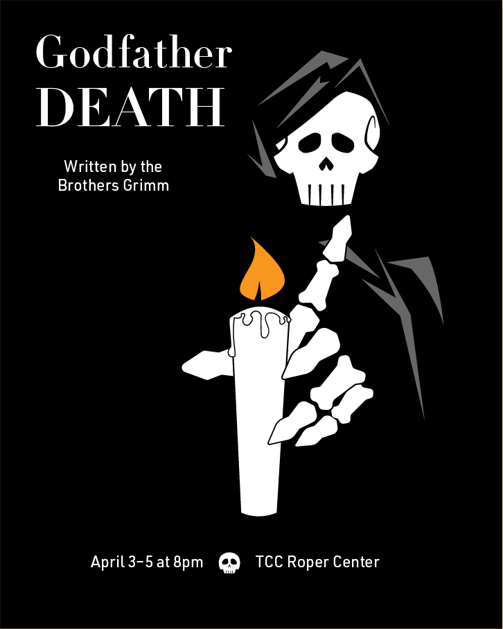
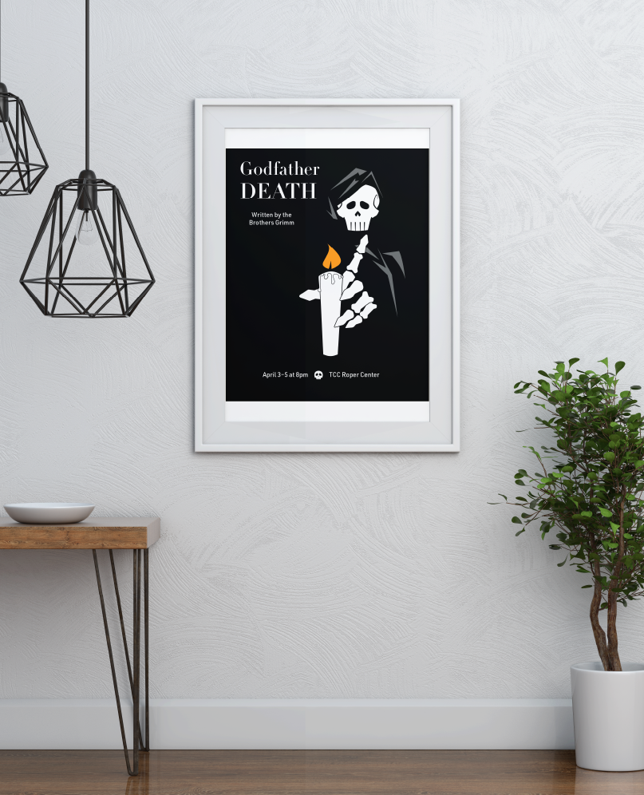

11" x 17", Visual Communication
A vector poster designed for a hypothetical stageplay based on a Brother's Grimm fairytale of our choosing, in my case being Godfather Death.
The purpose of this project wasn't just to advertise this hypothetical play, it was also to view the story through a rhetorical lense and represent what it is we see through that lense. Candles are an extremely important metaphorical element of Godfather Death, which is why I opted to push one to the forefront, even overtaking the titular figure himself.
Created in Illustrator.
